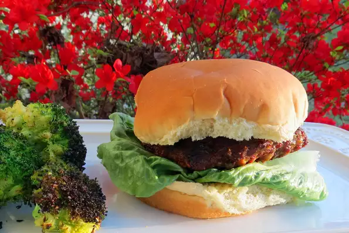

Blue Cheese Burger

Hearty cheeseburger!
Who doesn't love mac-n-cheese!Using this simple and easy to do recipe, you too can have a family classic for everyone to enjoy.
I picked a recipe that includes cauliflower because it pairs extremely well with the traditional mac, as well as being a healthy food to eat.
This recipe is also super simple to follow and can be scaled to make more or less depending on your needs.
- 2 pounds ground beef
- 2 eggs
- 1 teaspoon Worcestershire sauce
- 2 cups cooked bacon, chopped
- 1 cup green onions, chopped
- 1 tablespoon minced garlic
- 6 ounces Danish blue cheese, crumbled
- Blackening spice
- 1 teaspoon dried oregano
- 1 tablespoon red pepper flakes
- 2 teaspoons freshly ground black pepper
- 2 teaspoons sea salt
- 1 tablespoon onion powder
2 tablespoons brown sugar
- Step 1
Preheat grill to medium heat. .
- Step 2
Whisk eggs in a bowl and stir in Worcestershire sauce, bacon, green onion, garlic, and blue cheese.
- Step 3
In a large bowl, mix beef and egg mixture with a fork.
- Step 4
Shape into eight burger patties.